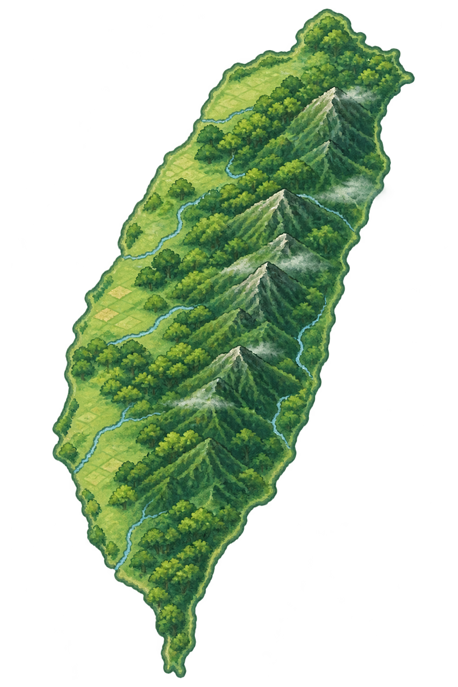

FIELD EXPLORATION / 01
研究模式島嶼探索
TAIWAN
ISLAND FIELD STATION
ISLAND FIELD STATION

＋ 棲地位置為示意，非實際目擊點
滾動放大地圖，尋找島嶼上的生命蹤跡
物種研究圖鑑
SPECIES RESEARCH ARCHIVE
探索島嶼各處，蒐集野生動物的研究紀錄。
圖鑑收集進度00 / 05

SPECIES RESEARCH ARCHIVE
探索島嶼各處，蒐集野生動物的研究紀錄。